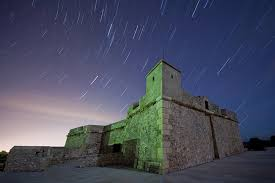
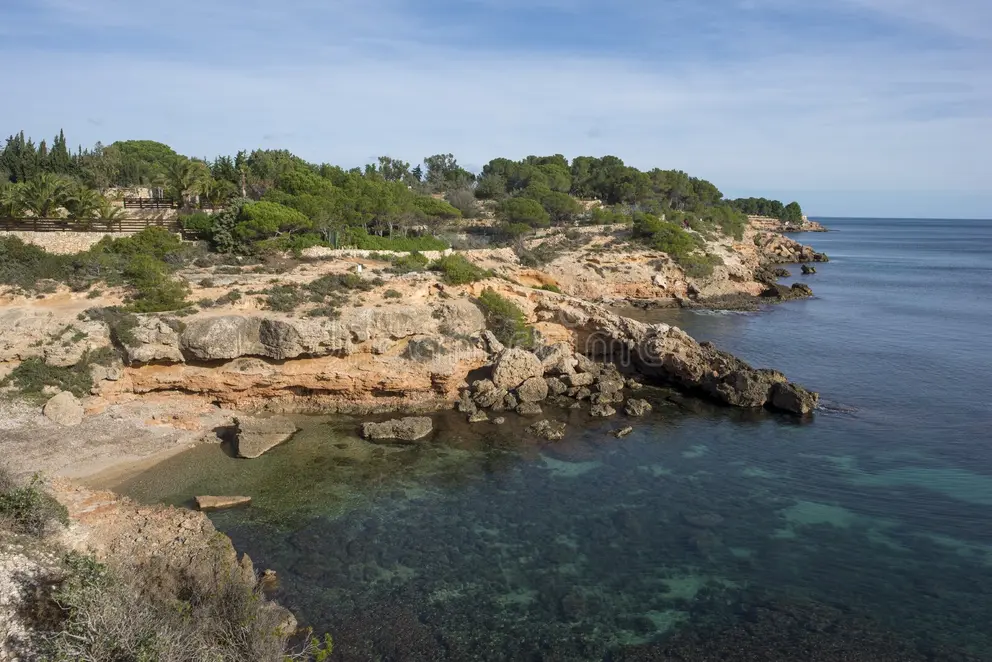

Castillo de Sant Jordi
Una fortaleza medieval del siglo XIII en buen estado, con vistas panorámicas al Mediterráneo. Monumento emblemático y accesible.

Descubre los sitios históricos que aún se mantienen en pie en L'Ametlla de Mar y su legado cultural y arquitectónico.
Una fortaleza medieval del siglo XIII en buen estado, con vistas panorámicas al Mediterráneo. Monumento emblemático y accesible.

Restos arqueológicos de una villa romana del siglo I d.C., con mosaicos y estructuras visitables.

Iglesia gótica del siglo XIV con renacentismo. En uso como lugar de culto y con arte religioso expuesto.
Restos de las antiguas murallas y torres defensivas del pueblo, parcialmente conservadas en el entorno urbano.

L’Ametlla de Mar está formado por tres calas, Sant Jordi y Calafat. En la segunda mitad del siglo XVIII se repobló en el periodo de Carlos III, consolidando su identidad costera.
Estos sitios históricos narran el pasado de L'Ametlla de Mar y son testimonios vivos que fomentan el turismo cultural y la educación.